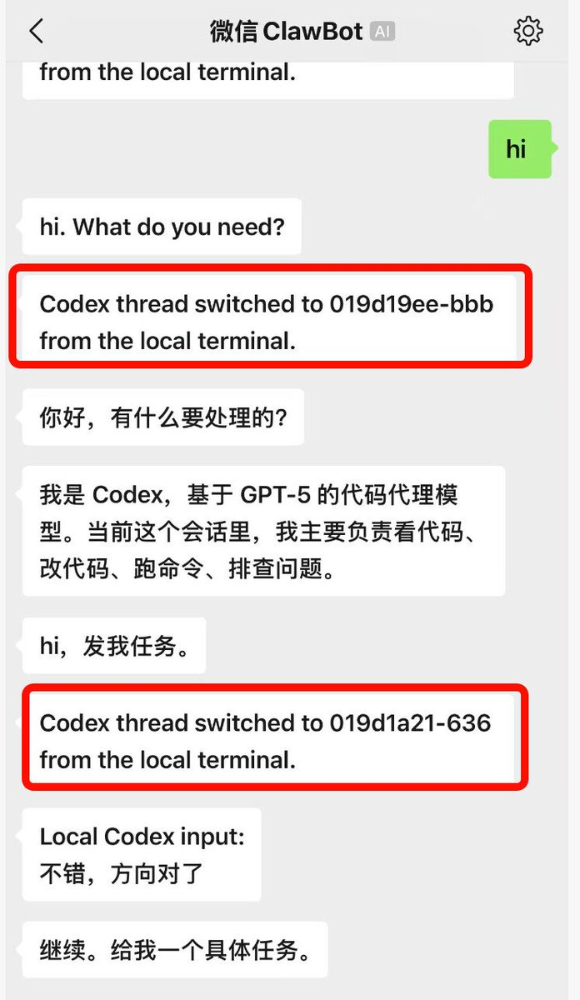
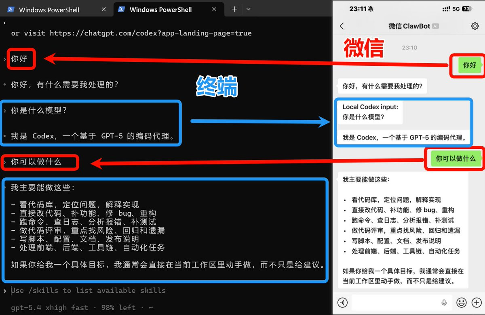
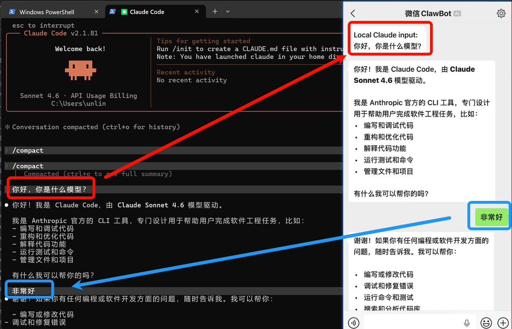

有推友问，怎么把Codex/Claude接入微信ClawBot，推荐一个GitHub看到的项目CLI-WeChat-Bridge。它是CLI命令行工具，集成微信Clawbot , 目前支持集成Codex、Claude Code （非 Channels 模式）。
在此之前市面上大多方案都是借助Channels（Claude最近才推送的功能）实现的。而这个项目不仅能使用Codex，甚至可以让API中转站的Claude无需Channels接入，解决了非官渠用户无法使用的痛点。
并且可以在本地终端 /resume 回到你的以前的任意线程/对话，中途也可以切换，微信就直接跟随到你本地的线程/对话中。我认为这个设计真的很棒，感谢unlinearity的贡献！
在此之前市面上大多方案都是借助Channels（Claude最近才推送的功能）实现的。而这个项目不仅能使用Codex，甚至可以让API中转站的Claude无需Channels接入，解决了非官渠用户无法使用的痛点。
并且可以在本地终端 /resume 回到你的以前的任意线程/对话，中途也可以切换，微信就直接跟随到你本地的线程/对话中。我认为这个设计真的很棒，感谢unlinearity的贡献！


